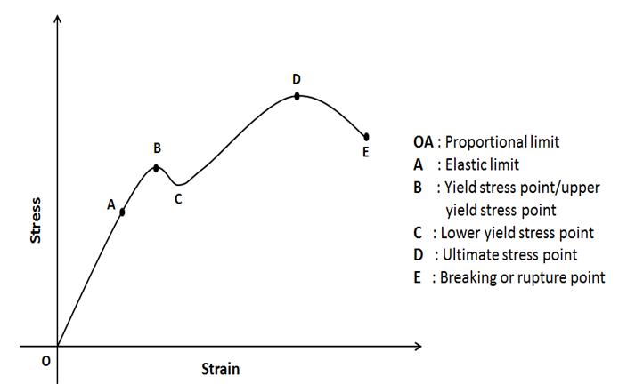

Q.28: Write short notes on Stress strain diagram of ductile material
Answer:
a) Stress strain diagram of ductile material
Suppose that a metal specimen be placed in tension-compression-testing machine. As the axial load is gradually increased in increments, the total elongation over the gauge length is measured at each increment of the load and this is continued until failure of the specimen takes place. Knowing the original cross-sectional area and length of the specimen, the normal stress σ and the strain ε can be obtained. The graph of these quantities with the stress σ along the y-axis and the strain ε along the x-axis is called the stress-strain diagram. The diagram shown below is that for a medium-carbon structural steel (Mild steel).

The various important points achieved in this curve are discussed below:
Point A:The elastic limit is the limit beyond which the material will no longer go back to its original shape when the load is removed, or it is the maximum stress that may be developed such that there is no permanent or residual deformation when the load is entirely removed.
Point B: It represents upper yield point of the material. It is the point where material starts yielding or elongation. After this point the curve is no longer a straight line. After this point, the material undergoes more rapid deformation. This point gives the yields strength of the material. Yield stress is defined as the stress after which material extension takes place more quickly with no or little increase in load.
Point C: It represents the lower yield point of the material. It is point after which material try to regain its strength.
Point D: It represents the ultimate strength of the material. It is the maximum stress value that material can withstand. It is the point of interest for design engineers. This ultimate strength is referred as the tensile strength of material.
Point E: It represents breaking point. It is the point occurred after maximum deformation. The stress associates with this point known as breaking strength or rupture strength.